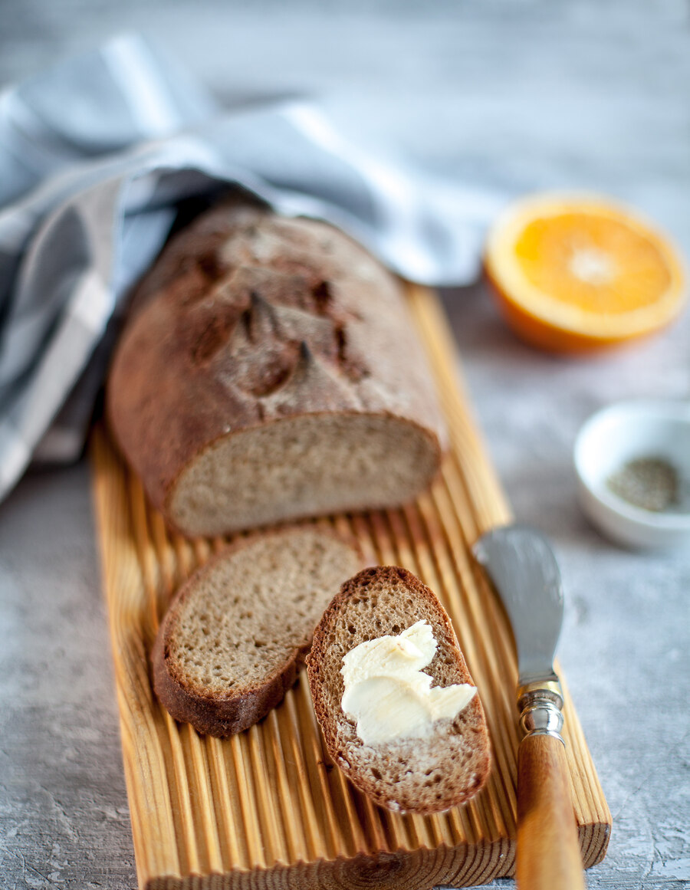

Этот невероятный ароматный хлеб — моя интерпретация известного шведского хлеба «лимпа». Его также можно печь на сыворотке — используйте ее вместо сока и воды. Хлеб очень вкусен с творожным сыром и просто с маслом на завтрак.
Для этого хлеба я использую удлиненную расстоечную корзину, если ее нет, можно оставить тесто для расстойки просто на полотенце из натуральной грубой ткани (льна), собрав складки по бокам и прикрыв другим полотенцем, а перед выпечкой аккуратно «перекатить» тесто с полотенца на противень.
Я пеку этот хлеб на камне, но если его нет, можно выпекать просто на противне или в чугунной кастрюле с невысокими бортиками, или сковородке. Кастрюлю, как и камень, нужно разогреть вместе с духовкой, а когда придет время выпечки, аккуратно перевернуть хлеб сначала на лопату или большую разделочную доску (обязательно присыпав ее немного мукой, чтобы хлеб не прилип), затем аккуратно скатить на горячий камень или в кастрюлю.